![IM]()
DISEÑO MECATRÓNICO (0563)
Objetivo(s) del curso:
El alumno diseñará sistemas mecatrónicos por medio de la aplicación de un proceso estructurado.
1. Introducción.
1.1 Definición de mecatrónica y su evolución.
DEFINICIÓN DE MECATRÓNICA
La Mecatrónica representa tanto una disciplina interdisciplinaria (Las disciplinas se fusionan y crean nuevos enfoques que no existían en ninguna de las disciplinas originales por separado y los límites entre las disciplinas se difuminan) y como una filosofía de diseño multidisciplinaria (Varias disciplinas trabajan en paralelo, pero cada una mantiene su identidad y métodos separados, como en un equipo donde cada especialista hace su parte independientemente) que integra de manera armónica y sinérgica la mecánica, la electrónica, la informática y las teorías de control automático.
Esta dualidad conceptual es fundamental para comprender su alcance y aplicación en la ingeniería moderna.
Como disciplina, la mecatrónica surge como respuesta a la creciente necesidad de integrar múltiples áreas del conocimiento en la ingeniería, con el fin de desarrollar productos más eficientes, funcionales, inteligentes y adaptativos.
Como filosofía, constituye una forma de pensar y abordar el diseño de sistemas que busca la sinergia entre diferentes campos técnicos para crear sistemas inteligentes y flexibles.
ORIGEN, BAUTIZMO Y EVOLUCIÓN HISTÓRICA
El término Mechatronics fue acuñado en 1969 por Tetsuro Mori un ingeniero senior de la empresa japonesa Yaskawa Electric en el que originalmente el campo de la mecatrónica estaba destinado a ser nada más que una combinación de mecánica, electricidad y electrónica, de ahí que el nombre sea un acrónimo de las palabras mechanics (de mecanismos) y electronics (de electrónica).
La palabra describía la integración entre la ingeniería mecánica y los sistemas electrónicos, pero con el tiempo, su significado ha evolucionado para abarcar un enfoque interdisciplinario mucho más amplio.
La palabra mecatrónica fue registrada como marca comercial por la empresa en Japón con el número de registro '46-32714' en 1971; más tarde, la compañía liberó el derecho a usar la palabra al público, y la palabra comenzó a usarse a nivel mundial.
Históricamente pueden distinguirse tres etapas en la evolución de la mecatrónica.
La primera etapa corresponde a la introducción de la palabra en el medio industrial y su aceptación; se caracteriza porque cada una de las tecnologías que la integran se desarrolla independientemente.
La segunda etapa se inicia a comienzos de los años 1980, y se caracteriza por la integración sinérgica de sus diferentes tecnologías (como la integración de la óptica a la electrónica para conformar la opto electrónica y el diseño integrado de hardware/software).
La tercera etapa puede considerarse como la que inicia la era de la mecatrónica, y se basa en el desarrollo de la inteligencia computacional y los sistemas de información. Una característica importante de esta última etapa es la miniaturización de los componentes en forma de micro actuadores y microsensores, integrados en sistemas microelectromecánicos o en micromecatrónica.
Hoy en día, la mecatrónica se define como una disciplina y filosofía tecnológica que integra la ingeniería mecánica, eléctrica, electrónica y de control inteligente computarizado para el diseño y manufactura de productos y procesos.
Un significado más amplio:
Se define como una filosofía en la tecnología de la ingeniería que integra de manera coordinada e interdependiente las disciplinas de ingeniería mecánica, electrónica y control inteligente por computadora.
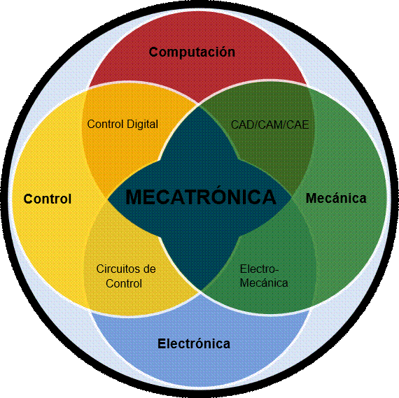
CARACTERÍSTICAS FUNDAMENTALES
Enfoque Integrador
La mecatrónica no reemplaza ni jerarquiza sus componentes disciplinarios, sino que los articula en un sistema cohesivo orientado a lograr una funcionalidad avanzada. Este enfoque integrador busca la armonización de diferentes áreas técnicas para crear sistemas funcionales, eficientes y adaptables.
Sinergia Multidisciplinaria
Este enfoque interdisciplinario busca desarrollar soluciones integradas en lugar de adoptar el enfoque tradicional, donde cada disciplina trabaja de manera independiente.
La esencia de la mecatrónica radica en la función principal del producto, el cual no solo depende de la integración de todas sus disciplinas que la conforman, si no de la sinergia que generan.
No se trata simplemente de yuxtaponer (asociar) diferentes tecnologías, sino de lograr una verdadera sinergia donde el resultado final supera la suma de sus partes individuales.
Diseño Inteligente
La mecatrónica permite una mayor flexibilidad, facilita el rediseño y reprogramación de sistemas, y mejora la capacidad de recopilar y procesar datos automáticamente.
En el diseño de productos como automóviles, robots, cámaras y electrodomésticos inteligentes, este enfoque ha transformado la manera en que se desarrollan las tecnologías modernas.
EVOLUCIÓN DEL CONCEPTO
Con el tiempo, la mecatrónica ha pasado de ser una simple combinación de mecánica y electrónica a un enfoque completamente integrado que incluye:
· Microcontroladores: Sistemas compactos que integran procesadores, memoria y periféricos en un solo chip, mejorando la eficiencia y la precisión de los sistemas.
· Sistemas de retroalimentación: Implementados para optimizar el control de procesos.
· Avances en inteligencia artificial: Permiten que los sistemas mecatrónicos realicen funciones autónomas y predigan comportamientos futuros.
IMPORTANCIA EN EL DISEÑO DE INGENIERÍA
El diseño de sistemas mecatrónicos se basa en un enfoque concurrente, donde la integración de disciplinas ocurre desde las primeras etapas. Esto contrasta con el enfoque secuencial tradicional y resulta en productos más económicos, confiables y fáciles de mantener. En conclusión, la mecatrónica representa una revolución en la ingeniería moderna, integrando tecnologías avanzadas para desarrollar sistemas eficientes y versátiles que responden a las necesidades actuales.
OBJETIVOS POR ALCANZAR
El objetivo es diseñar y manufacturar productos y procesos más eficientes, flexibles y automatizados. Esto permite sustituir funciones mecánicas por funciones electrónicas, logrando:
· Mayor flexibilidad
· Rediseño y reprogramación sencillos
· Recopilación y procesamiento automatizado de datos
La mecatrónica requiere un enfoque interdisciplinario, donde ingenieros y técnicos deben poseer habilidades y conocimientos que abarquen varias áreas de la ingeniería para operar y comunicarse efectivamente a través de estas disciplinas.
PLAN DE ESTUDIOS
En el plan de estudios de la ingeniería mecatrónica usualmente se encuentra:
Ingeniería Electrónica
· Electrónica Digital
· Electrónica Analógica
· Filtros Electrónicos
· Análisis de Circuitos Eléctricos en el Dominio del Tiempo y Frecuencia
· Sistemas Embebidos
· Máquinas Eléctricas
· Procesamiento Digital de Señales
· Sistemas de Comunicación
· Electrónica de Potencia
· Sistemas de instrumentación Industrial
· Sensores y Actuadores
· Sistemas Electromecánicos
· Sistemas de Control Industrial
· Sistemas Lineales Digitales Enfoque Clásico y Moderno
· Sistemas No Lineales
· Identificación de Sistemas
· Automatización Industrial
· Sistemas Ciberfísicos
· Control de Sistemas Mecatrónicos
· Diseño Asistido por Computadora (CAD)
· Mantenimiento Preventivo y Correctivo
Ciencia de la Computación
· Programación Estructurada
· Programación Orientada a Objetos (POO)
· Sistemas Operativos Robóticos
· Inteligencia Artificial
· Sistemas Operativos en Tiempo Real
· Programación Concurrente
· Simulación de Sistemas
· Redes Neuronales Artificiales
· Visión Artificial
· Robótica
Ingeniería Mecánica
· Mecánica de Materiales
· Mecánica de Fluidos
· Manufactura
· Manufactura Asistida Por Computadora (CAM)
· Neumática E Hidráulica
· Ciencia e Ingeniería de Materiales
· Vibraciones Mecánicas
· Fluidos térmicos
· Análisis Y Síntesis De Mecanismos
· Diseño de Elementos de Máquinas
· Dinámica de Maquinaria
· Sistemas Microelectromecánicos (MEMS)
· Biomecánica
Ingeniería Industrial
· Contabilidad de Costos
· Ingeniería Económica
· Administración de Empresas
· Administración de Proyectos
· Investigación de Operaciones
· Sistemas de Calidad
· Producción Industrial
· Logística
· Desarrollo Sustentable
· Tecnología y Medio Ambiente
Ingeniería de Procesos y Control
· Química Industrial
· Dinámica de Sistemas
· Mecánica de Producción
· Control Automático
· Ensamblaje Electrónico Industrial
· Procesos de Manufactura
· Sistemas de Manufactura Flexible
· Control de Procesos
· Operaciones de Proceso.
1.2 Elementos constitutivos de un sistema mecatrónico.
ELEMENTOS CONSTITUTIVOS DE LA MECATRÓNICA
Un sistema mecatrónico está constituido por diversos elementos interdependientes que deben funcionar de forma coordinada y sinérgica para lograr los objetivos del sistema.
Estos componentes trabajan en conjunto de manera coherente, proporcionando una integración efectiva entre la mecánica, la electrónica y los sistemas de control computarizados.
La interacción entre estos elementos es lo que convierte a un sistema tradicional en un verdadero producto mecatrónico, caracterizado por su capacidad de adaptación, automatización, inteligencia y eficiencia operativa.
La mecatrónica combina diversas áreas tecnológicas para diseñar sistemas más eficientes:
· Sensores y sistemas de medición: Permiten captar información del entorno.
· Actuadores: Ejecutan tareas mecánicas en respuesta a las señales de control.
· Control computarizado: Procesa datos y controla el comportamiento del sistema en tiempo real.
· Análisis de sistemas: Modelado de los sistemas y predecir su respuesta ante diferentes entradas
· Mecanismos de precisión: Encargados de transmitir el movimiento en operaciones específicas y de control.
SENSORES
Los sensores son esenciales para que el sistema perciba su entorno y responda de manera inteligente. Estos dispositivos convierten variables físicas, como temperatura o presión, en señales eléctricas procesables.
Sensores digitales:
Detectan cambios binarios, como la activación o desactivación de un dispositivo. Son útiles en sistemas de seguridad y monitoreo de condiciones límite.
Sensores analógicos:
Registran variaciones continuas de una magnitud física, como la temperatura, la presión o la velocidad. Son esenciales en sistemas donde se requieren mediciones precisas y ajustes en tiempo real.
Ejemplo práctico: En una cámara automática, un sensor de luz mide la intensidad lumínica para ajustar el enfoque y el tiempo de exposición.
ACTUADORES:
Los actuadores ejecutan las acciones necesarias para que el sistema cumpla su propósito.
Actuadores digitales:
· Operan en estados discretos, como la apertura o cierre de una válvula.
Actuadores analógicos:
· Generan movimientos continuos, como en motores eléctricos que ajustan su velocidad según la entrada de control.
Ejemplo práctico: En un sistema de suspensión inteligente, los actuadores ajustan la rigidez del chasis dependiendo de la carga y las condiciones del camino.
CONTROLADORES (UNIDAD DE PROCESAMIENTO)
El núcleo del sistema mecatrónico es el controlador, que puede estar basado en microprocesadores o microcontroladores. Su función principal es recibir datos de los sensores, procesar la información y enviar comandos a los actuadores.
Dentro de los controladores más utilizados se encuentran:
Microcontroladores:
Son circuitos integrados que combinan un procesador, memoria y puertos de entrada/salida en un solo chip. Se encargan de la toma de decisiones y ejecución de algoritmos de control.
Controladores lógicos programables (PLC):
Dispositivos utilizados en la automatización industrial para gestionar procesos como llenado de tanques, operación de cintas transportadoras y regulación de temperatura.
Funciones:
Ø Procesar datos de los sensores.
Ø Tomar decisiones basadas en algoritmos programados.
Ø Controlar los actuadores para ejecutar las acciones necesarias.
Ejemplo práctico: En una lavadora moderna, el microprocesador controla el ciclo de lavado, ajusta la temperatura del agua y activa las bombas y motores.
INTERFACES DE USUARIO
El diseño de interfaces de usuario en sistemas de software es un aspecto crucial en la ingeniería del software. Una interfaz bien diseñada facilita la interacción entre el usuario y el sistema, permitiendo un manejo intuitivo y eficiente de la información.
Principios de diseño
· Claridad: La interfaz debe ser fácil de entender y utilizar, con una disposición intuitiva de los elementos.
· Eficiencia: El diseño debe minimizar los pasos necesarios para completar una tarea, optimizando la productividad.
· Consistencia: La apariencia y el comportamiento de los elementos deben ser homogéneos para evitar confusión.
Ejemplo práctico: En una aplicación de monitoreo industrial, una interfaz gráfica permite a los operarios visualizar datos en tiempo real, ajustar parámetros de control y recibir alertas en caso de anomalías.
ESTRUCTURA MECÁNICA Y MECANISMOS
Los sistemas mecánicos constituyen la estructura física del sistema mecatrónico. Incluyen mecanismos, engranajes, ejes y otras partes que generan movimiento o soportan las fuerzas necesarias para la operación del sistema.
Función principal: Convertir las señales de control en movimientos físicos, como el desplazamiento de un actuador lineal o la rotación de un motor.
Ejemplo práctico: En una línea de producción automatizada, los sistemas mecánicos incluyen transportadores y brazos robóticos.
SOFTWARE
El software en mecatrónica se refiere al conjunto de programas y algoritmos diseñados para controlar, monitorear y optimizar sistemas electromecánicos.
A diferencia del software convencional, que suele centrarse en la manipulación de datos y en la interacción con usuarios, el software en mecatrónica desempeña un papel crucial en la integración y automatización de procesos mecánicos y electrónicos.
Este tipo de software facilita la comunicación entre sensores, actuadores y microcontroladores, permitiendo la toma de decisiones en tiempo real para ajustar el comportamiento de un sistema.
Los sistemas mecatrónicos dependen en gran medida de la interacción entre hardware y software. En este contexto, el software no sólo proporciona las instrucciones necesarias para el funcionamiento de un sistema, sino que también permite la reconfiguración y actualización de los algoritmos sin necesidad de modificar el hardware.
Esto le confiere una flexibilidad única, haciendo posible su uso en aplicaciones tan variadas como la robótica industrial, la automatización de vehículos y la instrumentación médica.
Ejemplo práctico: En la automatización industrial, el software controla el ensamblaje de piezas en una fábrica, optimizando tiempos de producción y reduciendo errores.
COMUNICACIÓN M2M*
Un sistema mecatrónico avanzado incluye sistemas de comunicación para intercambiar datos entre componentes o con sistemas externos.
Comunicación por cable:
Protocolos como RS-485 y CAN bus se emplean en la industria para conectar sensores y actuadores en redes locales.
Comunicación inalámbrica:
Tecnologías como Wi-Fi y Bluetooth permiten la monitorización y control remoto de sistemas mecatrónicos.
Ejemplo práctico: En una línea de producción, los controladores de las estaciones se comunican para sincronizar operaciones y optimizar el flujo de trabajo.
ACONDICIONAMIENTO DE SEÑALES
La electrónica de acondicionamiento comprende los circuitos que adaptan las señales procedentes de los sensores para que sean procesables por la unidad central, y también adaptan las señales de salida para controlar los actuadores de manera eficiente y segura.
Componentes incluidos:
· Filtros: eliminan ruido e interferencias
· Amplificadores: ajustan niveles de señal
· Convertidores: transforman señales analógicas a digitales y viceversa
· Acopladores: proporcionan aislamiento eléctrico
· Reguladores: estabilizan voltajes y corrientes
Función: Garantizar que todas las señales eléctricas cumplan con los requisitos de voltaje, corriente y formato necesarios para el correcto funcionamiento del sistema.
2. Fundamentos para el diseño mecatrónico.
2.1 Conocimientos y técnicas de diseño mecánico, diseño electrónico, diseño de software.
FUNDAMENTOS DEL DISEÑO MECATRÓNICO
El diseño mecatrónico exige un enfoque multidisciplinario integrado donde los ingenieros deben poseer un amplio conocimiento de los principios y técnicas de diversas áreas. El Diseño Mecatrónico requiere un enfoque interdisciplinario, integrando conocimientos en las áreas:
DISEÑO MECÁNICO
El diseño mecánico en sistemas mecatrónicos abarca la creación de estructuras y mecanismos que permitan la movilidad y funcionalidad del sistema. Este proceso implica la selección de materiales, el análisis de esfuerzos mecánicos y la optimización de las dimensiones de los componentes.
Conocimientos y Técnicas de Diseño Mecánico.
El diseño mecánico se centra en la transformación de materia, energía e información. Se le considera el área de mayor peso en el diseño mecatrónico desde un punto de vista práctico, ya que la mayor cantidad de partes de un producto mecatrónico suelen ser mecánicas.
|
Disciplina |
Tareas y Técnicas Clave |
|
Diseño Clásico |
Dominar la dinámica del cuerpo rígido, resistencia de materiales, mecánica de fluidos y termodinámica. |
|
Diseño Asistido por Computadora (CAD) |
Creación de modelos tridimensionales con software como SolidWorks, AutoCAD o CATIA para visualizar, simular y ajustar componentes antes de la fabricación. |
|
Análisis de Elementos Finitos (FEA) |
Análisis de la resistencia, deformaciones y vibraciones de estructuras bajo diversas condiciones de carga, utilizando herramientas como ANSYS o Abaqus. |
|
Optimización Topológica |
Reducción de peso y costos optimizando la distribución del material, manteniendo la resistencia. |
|
Diseño para la Manufacturabilidad (DFM) |
Diseño de componentes para facilitar y economizar la fabricación y el ensamblaje (considerando moldeo, mecanizado, etc.). |
Principales conceptos del diseño mecánico:
1. Elementos de máquinas: Incluyen engranajes, levas, rodamientos, ejes, tornillos y resortes.
2. Mecanismos de transmisión de movimiento: Uso de sistemas de poleas, engranajes y cadenas para transferir potencia.
3. Análisis de esfuerzos y deformaciones: Métodos como la teoría de resistencia de materiales y análisis de elementos finitos (FEA) permiten optimizar la resistencia y durabilidad de las piezas.
4. Diseño basado en CAD: Se utilizan herramientas como SolidWorks, AutoCAD o CATIA para modelar y simular el comportamiento mecánico antes de la fabricación.
5. Sistemas de actuación mecánica: Se diseñan mecanismos que convierten la energía de los actuadores en movimiento útil para la aplicación.
Un buen diseño mecánico debe garantizar la precisión, repetibilidad y durabilidad del sistema.
En sistemas mecatrónicos, los componentes mecánicos deben estar optimizados para trabajar en conjunto con los circuitos electrónicos y los sistemas de control
DISEÑO ELECTRÓNICO
El diseño electrónico es crucial para la integración de sensores, actuadores y sistemas de control en un sistema mecatrónico.
Esto implica la creación de circuitos de acondicionamiento de señal, la selección de componentes electrónicos adecuados y el desarrollo de sistemas embebidos para la automatización del sistema.
Conocimientos y Técnicas de Diseño Electrónico
El diseño electrónico se encarga de la transmisión y transformación de información unida a la energía (señales eléctricas). Se divide en tres grandes disciplinas:
1. Electrónica Analógica: Manejo de señales que varían de forma continua (información contenida en amplitud, frecuencia, fase, etc.).
2. Electrónica Digital: Manejo de señales que solo toman valores específicos, frecuentemente dos (unos "1" o ceros "0").
3. Electrónica de Potencia: Transmisión y regulación de señales eléctricas de energía (manipulación de energía eléctrica).
|
Disciplina |
Tareas y Técnicas Clave |
|
Simulación de Circuitos |
Utilización de herramientas como SPICE, LabVIEW o PROTEUS para prever el rendimiento de los circuitos antes de la fabricación. |
|
Diseño de Circuitos Impresos (PCB) |
Uso de herramientas como Altium Designer o Eagle para diseñar la disposición de componentes y minimizar interferencias. |
|
Diseño para Compatibilidad Electromagnética (EMC) |
Técnicas para reducir la interferencia electromagnética. |
|
Uso de Dispositivos Programables |
Selección de PLDs (Programmable Logic Devices) o microcontroladores para simplificar circuitos y añadir inteligencia. |
Elementos clave del diseño electrónico
1. Sensores y transductores: Convertidores de energía que transforman señales físicas en señales eléctricas para su procesamiento.
2. Circuitos de acondicionamiento de señales: Filtros, amplificadores operacionales y convertidores de señal digital-analógica (ADC y DAC) que permiten el procesamiento de datos.
3. Microcontroladores y microprocesadores: PIC, Arduino, ESP32 y otros procesadores embebidos que controlan el sistema y ejecutan algoritmos de control.
4. Interfaz de comunicación: Protocolos como SPI, I2C, RS-485, Bluetooth y Wi-Fi facilitan la comunicación entre módulos electrónicos y sistemas externos.
5. Actuadores electrónicos: Motores de corriente continua, motores paso a paso y servomotores que convierten señales eléctricas en movimiento mecánico.
El diseño electrónico en mecatrónica se basa en la correcta selección y optimización de estos componentes para garantizar la eficiencia energética y el control preciso de las señales dentro del sistema.
DISEÑO DE SOFTWARE
El software en sistemas mecatrónicos se encarga del procesamiento de datos, la ejecución de algoritmos de control y la interfaz de usuario. Un buen diseño de software debe garantizar la precisión, robustez y escalabilidad del sistema.
Conocimientos y Técnicas de Diseño de Software
El software en mecatrónica es el conjunto de programas y algoritmos para controlar, monitorear y optimizar sistemas electromecánicos. A diferencia del software convencional, este tipo de software facilita la comunicación entre sensores, actuadores y microcontroladores, permitiendo la toma de decisiones en tiempo real y la reconfiguración sin modificar el hardware.
|
Disciplina |
Tareas y Técnicas Clave |
|
Desarrollo Ágil |
Metodologías iterativas como Scrum o Kanban para el desarrollo colaborativo y continuo. |
|
Modelado UML |
Herramienta para visualizar el diseño de sistemas mediante diagramas (clases, secuencias, etc.). |
|
Integración Continua (CI/DevOps) |
Automatización de la integración y entrega de código para facilitar la detección temprana de errores y la implementación rápida. |
|
Pruebas Automatizadas |
Implementación de pruebas para verificar que el software funcione según lo esperado después de cada modificación. |
Aspectos clave del diseño de software:
1. Lenguajes de programación: Se utilizan C, C++, Python y lenguajes de bajo nivel como ensamblador para la programación de microcontroladores.
2. Sistemas operativos embebidos: Plataformas como FreeRTOS permiten la ejecución de múltiples tareas en sistemas embebidos.
3. Programación de microcontroladores: Se diseñan rutinas para la adquisición de datos, procesamiento de señales y control de actuadores.
4. Interfaces de usuario (HMI): Uso de pantallas LCD, interfaces gráficas y aplicaciones móviles para la interacción con el usuario.
5. Simulación y modelado de sistemas: Herramientas como MATLAB, Simulink y LabVIEW ayudan a analizar el comportamiento del sistema antes de su implementación.
El desarrollo de software en mecatrónica debe seguir un enfoque modular, permitiendo la reutilización de código y la facilidad de mantenimiento del sistema.
INTEGRACIÓN DE DISEÑO MECÁNICO, ELECTRÓNICO Y DE SOFTWARE
La verdadera complejidad del diseño mecatrónico radica en la sinergia entre las áreas mecánica, electrónica y de software. Cada una de estas disciplinas debe ser considerada desde el inicio del diseño para garantizar que el sistema funcione de manera óptima y eficiente.
El diseño concurrente es un enfoque clave en mecatrónica, donde todas las disciplinas trabajan juntas desde la fase de conceptualización.
Esto evita problemas de compatibilidad y mejora la optimización del sistema en términos de costos y rendimiento.
2.2 Dimensionamiento, selección e integración de los componentes constitutivos de un sistema mecatrónico.
DISEÑO E IMPLEMENTACIÓN
El diseño e implementación de un sistema mecatrónico implica un proceso iterativo en el que se deben considerar factores mecánicos, electrónicos y de software para garantizar su correcto funcionamiento. Cada una de las fases del desarrollo del sistema dimensionamiento, selección e integración que es crucial para lograr un sistema eficiente y funcional.
DIMENSIONAMIENTO
El dimensionamiento de un sistema mecatrónico se refiere al cálculo preciso de las características físicas, eléctricas y mecánicas de los componentes que lo conforman. Este proceso es fundamental para garantizar la capacidad operativa y el desempeño óptimo del sistema.
Factores clave en el dimensionamiento
· Tamaño y capacidad: Se debe definir el espacio físico disponible para el sistema y el volumen de operación de cada componente.
· Carga máxima y esfuerzos mecánicos: Es necesario calcular la resistencia estructural de los materiales utilizados en los mecanismos.
· Potencia requerida: La elección de motores y fuentes de alimentación depende de la carga que deben mover y de la eficiencia energética esperada.
· Frecuencia y velocidad de operación: Se deben definir los tiempos de respuesta de sensores, actuadores y controladores para garantizar un funcionamiento sin retardos.
Ejemplo: Para un brazo robótico en una línea de producción, el dimensionamiento debe considerar:
ü La cantidad de fuerza que debe ejercer para manipular objetos sin deformarlos.
ü El torque necesario para girar y extenderse sin pérdida de estabilidad.
ü La velocidad de respuesta para sincronizarse con el resto del sistema.
SELECCIÓN
La selección de componentes en un sistema mecatrónico debe realizarse en función de la compatibilidad entre los elementos mecánicos, electrónicos y computacionales. Una mala elección puede resultar en sistemas ineficientes o propensos a fallas.
Criterios de selección
· Compatibilidad: Los sensores, actuadores y controladores deben operar con los mismos estándares de comunicación y alimentación.
· Precisión y rango de operación: Un sensor de temperatura debe ser capaz de medir con exactitud en el rango de temperaturas esperado en la aplicación.
· Fiabilidad y durabilidad: Es importante elegir componentes con alta resistencia a la fatiga y al desgaste.
· Costo-beneficio: Se deben evaluar las opciones disponibles considerando su desempeño y costo para asegurar una inversión eficiente.
Ejemplo: Para un sistema de control de temperatura en un horno industrial:
· Se seleccionan termopares adecuados según el rango de temperatura a medir.
· Se elige un controlador PID con la capacidad de ajustar la temperatura con precisión.
· Se integra un actuador térmico para regular la temperatura de manera eficiente.
Dimensionamiento y Selección
La selección de componentes debe buscar un balance óptimo entre la estructura mecánica básica, la integración de sensores y actuadores, el procesamiento digital de información y el control.
El dimensionamiento, especialmente de actuadores, es crucial.
Por ejemplo, para un actuador de movimiento rotatorio se deben determinar las especificaciones de torque, velocidad y potencia.
Un aspecto fundamental es el acoplamiento de la inercia entre el motor y la carga, lo que se busca optimizar mediante la relación de engranaje ().
La condición para la transferencia de potencia máxima ocurre cuando el momento de inercia del motor () se acopla con el momento de inercia reflejado de la carga (), lo que minimiza el par requerido para una aceleración dada.
Ecuación de Acoplamiento de Inercia (Condición Óptima para Transferencia de Potencia Máxima):
Donde es el coeficiente de reducción del engranaje e es el momento de inercia de la carga.
INTEGRACIÓN
La integración de los diferentes elementos de un sistema mecatrónico es el paso final y más complejo del diseño. Se debe garantizar que los componentes mecánicos, electrónicos y de software trabajen de manera sincronizada.
El objetivo del diseño mecatrónico es la integración de conocimientos de ingeniería del producto de forma concurrente (simultánea) involucrando sinérgicamente la ingeniería mecánica, eléctrica e informática.
El diseño concurrente es necesario para evitar problemas que surgen en el enfoque tradicional secuencial (diseño mecánico primero, luego electrónico).
Los problemas del diseño secuencial incluyen:
1. Las características originales y las condiciones de operación de los componentes diseñados independientemente cambian al ser interconectados debido a las cargas o interacciones dinámicas.
2. El acoplamiento (matching) de dos componentes diseñados por separado es casi imposible, resultando en que uno esté subutilizado o sobreutilizado.
3. Las variables externas se vuelven internas y ocultas, lo que puede resultar en problemas potenciales de control o sensado.
Aspectos clave de la integración
· Modelado y simulación: Antes de la implementación física, se utiliza software de modelado para predecir el comportamiento del sistema y realizar ajustes sin incurrir en costos de prototipado.
· Interfaces de comunicación: La compatibilidad entre los diferentes subsistemas es clave para la transmisión eficiente de datos.
· Validación y pruebas: Se realizan pruebas funcionales y de estrés para garantizar la robustez del sistema en condiciones reales.
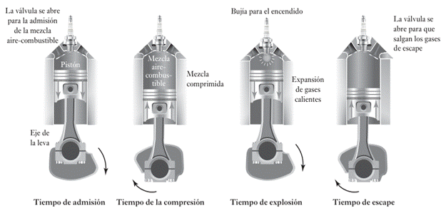
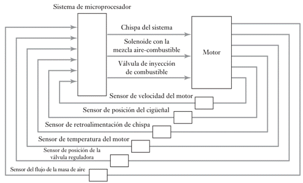
INTERFACES DE COMUNICACIÓN ENTRE SUBSISTEMAS
Las interfaces de comunicación permiten la conexión entre sensores, actuadores y controladores dentro de un sistema mecatrónico. Existen múltiples protocolos y tecnologías utilizadas en la industria:
RS-485 y CAN Bus
Utilizados en la automatización industrial por su robustez y resistencia a interferencias.
Ethernet Industrial
Permite la comunicación de alta velocidad entre múltiples controladores en una planta de producción.
Protocolo inalámbrico (Wi-Fi, Bluetooth)
Facilita la conexión remota en sistemas de monitoreo y control distribuido.
PRUEBAS Y VALIDACIÓN DEL SISTEMA COMPLETO
Antes de la implementación final de un sistema mecatrónico, es crucial someterlo a pruebas exhaustivas para verificar su desempeño. Las pruebas pueden clasificarse en:
· Pruebas de integración y funcionales: Se evalúa la interacción entre los diferentes subsistemas y se asegura que cada componente realiza su tarea correctamente dentro del sistema.
· Pruebas de estrés y rendimiento: Se somete al sistema a condiciones extremas para comprobar su fiabilidad.
3. Metodologías para el diseño de sistemas mecatrónicos.
3.1 Definición de: método de diseño, procedimiento de diseño y modelos.
DEFINICIONES
Diseño: Es la capacidad de transformar una idea en la posibilidad de creación. En la ingeniería, es el proceso de usar principios científicos y métodos técnicos para llevar a cabo un plan que satisfaga una necesidad, obteniendo un resultado final concreto y con realidad física.
Metodología de Diseño: Es una guía propuesta para lograr una meta con una alta probabilidad de éxito. Consiste en la planificación total de la actividad en el desarrollo de un producto, considerando diversos enfoques (humanos, ambientales, producción, etc.). Una metodología sirve como una guía para que el diseño de productos sea congruente y se considere su ámbito multidisciplinario desde las primeras etapas.
Método de Diseño: Es una lista de instrucciones sobre cómo realizar actividades para proceder en uno o más pasos en un proceso de diseño. Describe un proceso de transformación donde la información de un problema se convierte en información acerca de una o más soluciones.
Modelos: Son construcciones o imaginaciones abstractas del sistema que admiten alguna forma de análisis matemático (modelos matemáticos). Se utilizan para describir las relaciones entre la entrada y la salida de un sistema mediante ecuaciones que son funciones del tiempo.
MÉTODO DE DISEÑO
El Método de Diseño es un enfoque estructurado que guía la creación de sistemas o productos.
Se fundamenta en principios bien definidos y en el uso de herramientas analíticas y computacionales que permiten obtener soluciones eficientes y optimizadas.
Este enfoque considera diversos factores como la funcionalidad, el rendimiento, la fiabilidad y la factibilidad de implementación. Los métodos de diseño pueden dividirse en:
1. Diseño basado en modelos matemáticos: Se utilizan ecuaciones y representaciones numéricas para predecir el comportamiento del sistema.
2. Diseño basado en simulaciones: Se emplean herramientas computacionales para evaluar la interacción de los componentes antes de la implementación física.
3. Diseño iterativo: Se realizan múltiples pruebas y ajustes en el modelo hasta alcanzar un diseño óptimo.
4. Diseño concurrente: Se integran simultáneamente múltiples disciplinas, como mecánica, electrónica e informática, para acelerar el proceso de desarrollo.
PROCEDIMIENTO DE DISEÑO
El Procedimiento de Diseño se refiere a la secuencia de pasos que deben seguirse para desarrollar un producto o sistema.
Este proceso es fundamental para garantizar que las soluciones adoptadas sean viables y cumplan con los requisitos técnicos y funcionales.
Fases del procedimiento de diseño
1. Identificación de la necesidad: Se analiza el problema a resolver, definiendo los requisitos del sistema y las condiciones de operación.
2. Análisis del problema: Se estudian los factores críticos del diseño, como las restricciones de espacio, costo, eficiencia energética y compatibilidad con otros sistemas.
3. Generación de soluciones posibles: Se proponen diferentes enfoques para resolver el problema, considerando alternativas mecánicas, electrónicas y computacionales.
4. Selección de la solución adecuada: Se comparan las opciones disponibles mediante simulaciones y pruebas para determinar la mejor alternativa en términos de eficiencia y costo.
5. Producción del diseño detallad: Se elaboran modelos precisos del sistema, incluyendo planos, diagramas eléctricos y esquemas de software.
6. Verificación del diseño: Se realizan pruebas de validación para asegurar que el sistema cumple con los requisitos definidos.
El diseño en ingeniería no es un proceso lineal, sino que implica retroalimentación continua.
Durante el desarrollo de un producto, pueden surgir nuevas necesidades o restricciones que requieran ajustes en el diseño inicial. Por esta razón, las metodologías modernas de diseño han adoptado enfoques iterativos y flexibles.
MODELOS
Los modelos son representaciones matemáticas, gráficas o físicas de un sistema.
Permiten analizar el comportamiento de un producto antes de su fabricación, facilitando la detección de posibles fallos y optimizando el diseño.
Tipos de Modelos en Ingeniería
· Modelos matemáticos: Se expresan mediante ecuaciones diferenciales o algebraicas que describen la dinámica del sistema. Son útiles en la predicción del rendimiento y en el análisis de estabilidad.
· Modelos de simulación: Se implementan en software especializado, como MATLAB o Simulink, para evaluar el comportamiento del sistema bajo distintas condiciones.
· Modelos físicos: Incluyen prototipos y maquetas a escala, utilizados para probar componentes en condiciones reales.
En la ingeniería de software, los modelos también juegan un papel fundamental.
Un ejemplo es el lenguaje unificado de modelado (UML), que se utiliza para representar la estructura y el comportamiento de un sistema de software antes de su implementación.
Los modelos permiten realizar simulaciones que ayudan a predecir el rendimiento del sistema antes de la implementación física.
Esto reduce costos y tiempos de desarrollo, evitando errores costosos en etapas avanzadas del proyecto.
3.2 Escuelas de diseño.
DISEÑO TRADICIONAL
El diseño tradicional es un método secuencial en el que cada disciplina involucrada en el desarrollo de un sistema mecatrónico trabaja por separado en diferentes etapas del proceso.
Bajo este enfoque, los ingenieros mecánicos diseñan primero la estructura mecánica, luego los ingenieros electrónicos desarrollan los circuitos de control y, finalmente, los especialistas en software programan la lógica de funcionamiento. Este enfoque, aunque ha sido ampliamente utilizado en la ingeniería, presenta ciertas limitaciones:
· Falta de integración temprana: Dado que cada área trabaja de manera independiente, cualquier ajuste en una etapa puede generar problemas en las siguientes, lo que puede llevar a ineficiencias en el desarrollo.
· Mayor tiempo de desarrollo: La falta de colaboración simultánea entre disciplinas puede hacer que el proceso sea más lento.
· Dificultad en la optimización del sistema completo: Como cada parte del diseño se desarrolla por separado, puede ser complicado lograr una integración armónica de todos los componentes.
A pesar de sus limitaciones, este enfoque sigue siendo útil en proyectos en los que las interacciones entre las distintas disciplinas son mínimas o en casos donde se requiere una estructuración rígida del desarrollo.
ESCUELAS DE DISEÑO
Escuela Tradicional (Diseño Mecánico Secuencial)
Propone dividir el proceso en fases secuenciales. Las fases típicas son: Comprensión y planeación de la tarea, Diseño conceptual, Diseño de configuración y Diseño de detalle. Este enfoque es limitado para la mecatrónica, ya que trata la electrónica y el software como subsistemas agregados en fases tardías, en lugar de integrarlos desde el inicio.
Escuela Mecatrónica (Diseño Concurrente e Integrado)
Busca la integración sinérgica de las ingenierías mecánica, eléctrica/electrónica y la informática/control desde el inicio del diseño. Su objetivo es la optimización y la producción de soluciones que confieran inteligencia y flexibilidad al producto.
Metodologías Ágiles
Ideologías de flujo de trabajo que enfatizan la rapidez, flexibilidad, colaboración y adaptación continua a los cambios.
· Scrum: Marco de trabajo ágil basado en iteraciones cortas llamadas Sprints. Define roles (Product Owner, Scrum Master, Equipo de Desarrollo) y artefactos (Product Backlog, Sprint Backlog).
· Kanban: Metodología visual enfocada en la gestión de procesos de producción y el flujo de trabajo, coordinando la producción, venta y almacenamiento, utilizando tableros como "Por hacer," "En desarrollo," "Revisión," y "Aprobación".
Diseño Centrado en el Usuario (DCU) / Lean UX / Diseño Participativo
Se enfocan en validar ideas rápidamente y crear productos que satisfagan las necesidades y la experiencia del usuario (usabilidad, eficiencia, satisfacción).
El Diseño Participativo involucra a todas las personas afectadas en el proceso de toma de decisiones.
Las fases de DCU incluyen: Enfatizar, Definir Metas del Usuario, Prototipo y Evaluación.
Metodologías de Optimización y Calidad
· Six Sigma (DMAIC/DMADV): Enfoque sistemático para mejorar procesos y reducir defectos a un estándar de 3.4 defectos por millón (DPMO). DMAIC (Definir, Medir, Analizar, Mejorar, Controlar) se utiliza para mejorar procesos existentes. DMADV (Definir, Medir, Analizar, Diseñar, Verificar) se utiliza para el diseño de nuevos productos.
· TRIZ: Teoría basada en el análisis de patentes para la generación de ideas y soluciones innovadoras, buscando eliminar las contradicciones técnicas y físicas sin recurrir a compromisos.
DISEÑO CONCURRENTE
El diseño concurrente es una metodología que busca optimizar el desarrollo de sistemas mecatrónicos mediante la colaboración interdisciplinaria desde las primeras etapas del proyecto.
A diferencia del enfoque tradicional, en este método todos los especialistas trabajan simultáneamente en el diseño del sistema, lo que permite identificar y resolver problemas de manera anticipada.
Características del Diseño Concurrente
· Interacción entre disciplinas: Ingenieros mecánicos, electrónicos y de software colaboran desde el inicio, lo que permite una integración más eficiente de los sistemas.
· Reducción de tiempos de desarrollo: Al trabajar en paralelo, se minimizan los retrasos y se optimiza el proceso de fabricación.
· Mejor calidad del producto final: La integración temprana permite detectar y corregir errores antes de la implementación, reduciendo costos de modificación en etapas avanzadas.
El diseño concurrente se basa en modelos avanzados de simulación y en herramientas computacionales que permiten predecir el comportamiento del sistema antes de su construcción.
Esta metodología se ha convertido en una de las más utilizadas en la actualidad, especialmente en industrias como la automotriz, aeroespacial y de manufactura avanzada.
ENFOQUE MULTIDISCIPLINARIO
El enfoque multidisciplinario busca integrar conocimientos y tecnologías de diversas disciplinas para crear soluciones innovadoras.
En este modelo, la solución de problemas no se limita a una única perspectiva, sino que combina herramientas y métodos de diferentes áreas para desarrollar productos más eficientes y con mayores capacidades.
Ventajas del Enfoque Multidisciplinario
· Innovación y creatividad: Al combinar distintas áreas del conocimiento, se generan soluciones que pueden mejorar significativamente el rendimiento y la funcionalidad del sistema.
· Mayor eficiencia y rendimiento: La sinergia entre disciplinas permite optimizar la integración de componentes y mejorar la interacción entre ellos.
· Flexibilidad en el diseño: Se pueden explorar distintas alternativas para la solución de un problema, considerando tanto aspectos mecánicos como electrónicos y de software.
Un ejemplo clásico del enfoque multidisciplinario es la transformación de básculas mecánicas en básculas digitales.
En lugar de depender de resortes y engranajes para medir el peso, se emplean sensores electrónicos que envían señales a un microprocesador, permitiendo mediciones más precisas y la integración con otros sistemas electrónicos.
3.3 Selección de una metodología de diseño.
METODOLODIAS DE DISEÑO
Las metodologías de diseño constituyen enfoques estructurados que orientan el desarrollo de productos, servicios o soluciones centradas en el usuario, la eficiencia o la innovación.
Estas metodologías se enfocan en comprender las necesidades del usuario, resolver problemas de forma creativa, y asegurar la calidad durante todo el proceso de desarrollo.
Aquí se exploran diversas metodologías, desde aquellas orientadas al diseño centrado en el usuario y la participación de Stakeholders, hasta enfoques altamente estructurados y orientados a resultados como Six Sigma y Agile.
El objetivo común entre todas es asegurar una respuesta efectiva a los desafíos actuales del diseño, minimizando errores, maximizando la experiencia del usuario y adaptándose a contextos cambiantes.
DISEÑO CENTRADO EN EL USUARIO
El Diseño Centrado en el Usuario (DCU) es una metodología que coloca al usuario y sus necesidades como el foco principal durante todo el proceso de diseño, con el objetivo de lograr la mayor satisfacción y mejor experiencia de uso posible con el mínimo esfuerzo.
Según la norma ISO 9241-11, esta metodología establece los principios y requisitos en el desarrollo de productos y sistemas interactivos, definiendo la usabilidad como "el grado de eficacia, eficiencia y satisfacción con la que usuarios específicos pueden lograr objetivos específicos, en contextos de uso específicos".
Tiene también una dimensión ética y económica, ya que diseñar productos usables resulta rentable económicamente, evaluándose el "buen diseño" por su retorno de inversión.
La experiencia del usuario abarca múltiples aspectos como accesibilidad, utilidad, marketing, información del producto, funcionalidad, estética, emociones y contenido, todos los cuales contribuyen a generar mayores ingresos. El factor humano juega un papel crucial, enfatizando la facilidad visual mediante estrategias como enfatizar, organizar y hacer reconocibles los elementos de diseño.
El proceso del Diseño Centrado en el Usuario se desarrolla en cuatro etapas fundamentales:
· Primero, se analiza el contexto de la problemática, donde se busca comprender la necesidad del usuario, determinando si se trata de un servicio o producto y reconociendo las limitaciones existentes.
· Segundo, se establecen las metas del usuario, explorando diferentes soluciones basadas en su experiencia sobre la problemática y ajustándolas a sus especificaciones.
· Tercero, se crean prototipos basados en la información proporcionada por el usuario, desarrollando diferentes alternativas que cumplan con sus necesidades para identificar la mejor solución.
· Finalmente, se realiza la evaluación del producto, donde el usuario valora las posibles soluciones con base en sus especificaciones; si la evaluación es negativa, se regresa a la segunda etapa, y si es positiva, se entrega el producto final al usuario.
Para implementar esta metodología, se utilizan diversas herramientas como: entrevistas para recopilar requisitos y analizar a varios usuarios, encuestas que permiten a diferentes usuarios responder cuestionarios para obtener más información, focus groups para conocer opiniones sobre el producto, test de usabilidad para realizar diferentes pruebas y recoger opiniones, y walkthrough para desarrollar acciones específicas con el producto e identificar posibles fallas.
MODELO DE DOBLE DIAMANTE (DOUBLE DIAMOND MODEL)
El Modelo de Doble Diamante es una metodología de diseño creada por el Design Council en 2005, que proporciona una estructura clara para los procesos de innovación y diseño.
Este modelo se fundamenta en los principios de divergencia y convergencia, representados visualmente como dos diamantes consecutivos que simbolizan las fases de expansión y refinamiento del pensamiento durante el proceso creativo.
La fortaleza de este enfoque radica en su capacidad para equilibrar la exploración amplia con la toma de decisiones enfocada, permitiendo a los equipos navegar de manera efectiva desde la identificación del problema hasta la implementación de soluciones viables y centradas en el usuario.
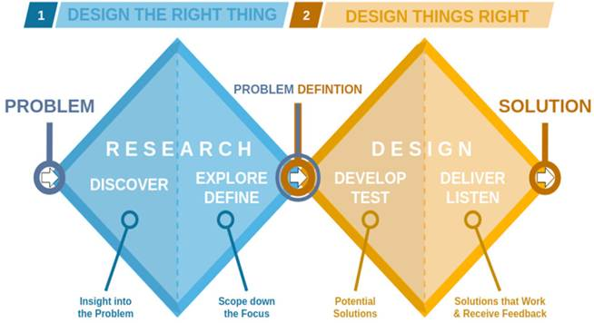
El proceso del Doble Diamante se divide en cuatro fases distintivas que guían el recorrido del diseño:
· La primera fase, Descubrir, se centra en la investigación de usuarios mediante técnicas como entrevistas, encuestas y análisis de tendencias para comprender profundamente el contexto y las necesidades existentes.
· La segunda fase, Definir, implica la creación de arquetipos de usuario, la identificación de puntos de dolor y la definición precisa del problema clave que se abordará.
· La tercera fase, Desarrollar, fomenta la generación de ideas a través de sesiones de lluvia de ideas, el desarrollo de prototipos y la validación inicial de conceptos.
· La cuarta fase, Entregar, comprende pruebas exhaustivas y refinamiento, culminando con el lanzamiento del producto o servicio y la evaluación de resultados.
Los principales beneficios de este modelo incluyen su enfoque centrado en la experiencia del usuario, el fomento sistemático de la creatividad y la reducción significativa de riesgos durante el proceso de desarrollo.
DISEÑO ESPECULATIVO
El Diseño Especulativo es una metodología orientada a imaginar y representar futuros posibles mediante la creación de objetos, conceptos o narrativas que cuestionan el presente.
Esta metodología incluye el Diseño Ficcional, que se enfoca en la creación de historias que representan el futuro; la Planificación de escenarios, que involucra la construcción de múltiples escenarios posibles con un enfoque narrativo; el Diseño Crítico, que cuestiona y desafía las suposiciones culturales, sociales o tecnológicas del presente; y el Prototipado Especulativo, que consiste en el diseño y desarrollo de objetos o conceptos que simbolizan futuros hipotéticos.
Adicionalmente, esta metodología utiliza narrativas visuales y escritas para contextualizar los prototipos en escenarios futuros, y fomenta la participación e interacción del público presentando los prototipos a audiencias para recopilar reacciones y promover debates críticos.
Esta metodología no busca ofrecer respuestas definitivas, sino abrir preguntas que enriquezcan el diálogo sobre las consecuencias éticas, sociales o tecnológicas de nuestras decisiones de diseño.
LEAN UX
Lean UX es una metodología de diseño ágil enfocada en la creación de productos digitales como aplicaciones, sitios web o plataformas, centrándose primordialmente en la experiencia del usuario.
Su principal objetivo es validar ideas rápidamente y desarrollar productos que verdaderamente satisfagan las necesidades de los usuarios.
Esta metodología se fundamenta en varios principios clave:
· Está centrada en el usuario basando las decisiones en cómo los usuarios interactúan con el producto y no solamente en suposiciones del equipo.
· Promueve la iteración continúa realizando pequeños ajustes frecuentes en lugar de desarrollos largos y rígidos.
· Fomenta la colaboración constante entre equipos multidisciplinarios de diseño, desarrollo y producto, que trabajan juntos desde el inicio del proyecto.
· Prioriza el feedback rápido probando las ideas rápidamente con usuarios reales para tomar decisiones basadas en datos y no en opiniones.
· Se enfoca en resultados tangibles en lugar de entregables documentales extensos.
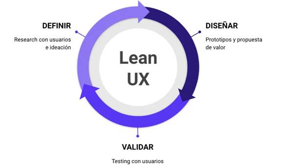
El proceso de Lean UX se estructura en cuatro fases principales que conforman un ciclo iterativo de mejora continua:
· La primera fase consiste en la definición de conjeturas, donde se establecen supuestos, se priorizan y se formulan hipótesis claras que guiarán el desarrollo.
· La segunda fase promueve el diseño colaborativo mediante técnicas como Design Studio y la creación de guías de estilo que establecen patrones consistentes para el producto.
· La tercera fase se centra en el desarrollo de MVP (Producto Mínimo Viable) y experimentos, implementando versiones simplificadas pero funcionales del producto para validar hipótesis tanto con prototipos como sin ellos.
· La fase final se dedica al aprendizaje continuo, incorporando investigación colaborativa, investigación continua, identificación de patrones emergentes y técnicas de monitorización constante que permiten ajustar el desarrollo en función de los hallazgos.
Un caso de éxito notable de la aplicación de Lean UX es Airbnb, que surgió como respuesta a una necesidad personal de sus fundadores para pagar el alquiler. La plataforma evolucionó a través de iteraciones constantes de sus hipótesis, como mejorar la calidad de las fotografías de las habitaciones contratando a un fotógrafo especializado, y manteniendo un contacto permanente con los usuarios para adaptar el producto a sus necesidades reales.
AGILE, SCRUM Y KANBA
AGILE es una ideología de flujo de trabajo transformador que se aplica principalmente en el desarrollo de software y la gestión de proyectos, surgida en febrero de 2001 cuando 17 profesionales se reunieron para establecer sus principios fundamentales.
La clave de su éxito radica en organizar y repartir el trabajo de manera rápida y flexible entre diferentes equipos multidisciplinares.
Esta metodología se desarrolla a través de cinco fases principales: Imaginar, Especular, Explorar, Adaptar y Cerrar, aunque los pasos y ceremonias específicos pueden variar dependiendo del marco ágil utilizado y las necesidades particulares del proyecto.
Para facilitar su implementación, Agile se apoya en una variedad de herramientas, principalmente software y plataformas que ayudan a planificar, organizar y gestionar proyectos de forma eficiente.
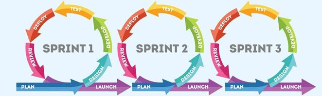
SCRUM, por su parte, es un marco ágil de trabajo formalizado en la década de los 90, utilizado principalmente para la gestión y desarrollo de proyectos.
Su enfoque promueve la colaboración dentro de equipos, la flexibilidad, la entrega continua de valor y la adaptación a cambios durante el desarrollo del proyecto.
Aunque es especialmente popular en el ámbito del software, su aplicabilidad se extiende a otros contextos.
Scrum no constituye una metodología rígida, sino un conjunto de principios y prácticas basadas en iteraciones denominadas Sprints, que se estructuran mediante roles definidos (Product Owner, Scrum Master y Equipo de Desarrollo), eventos clave (Planificación del Sprint, Reuniones Diarias o Daily Scrum, Revisión del Sprint y Retrospectiva del Sprint) y artefactos específicos (Lista de Product Backlog, Sprint Backlog y el Incremento).
El proceso de implementación de Scrum sigue un flujo definido:
· Primero, se aplica a través de módulos cortos y fijos realizados en bloques (Sprints).
· Segundo, se lleva a cabo el Sprint Planning Meeting donde se presenta el Product Backlog.
· Tercero, el equipo realiza un Sprint Backlog detallando las tareas a realizar en las semanas establecidas.
· Cuarto, se realizan Daily Scrums o reuniones diarias de 15 minutos.
· Quinto, tras concluir el sprint se realiza el Sprint Review.
· Finalmente, se lleva a cabo el Sprint Retrospective donde el equipo analiza su forma de trabajo para mejorar en futuros sprints.
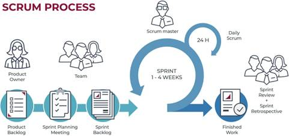
KANBAN, originado en los años 40 dentro de las fábricas de Toyota aunque comenzó a utilizarse sistemáticamente en los años 50, es una metodología visual empleada para optimizar procesos de producción, coordinando efectivamente la producción, venta y cantidad de almacenamiento.
Su estructura básica organiza las tareas en columnas que representan diferentes estados del proceso: "Por hacer", "En desarrollo", "Revisión" y "Aprobación".
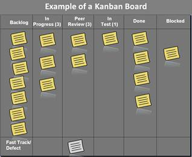
Las herramientas Kanban son esenciales para mantener una buena organización e impulsar la productividad en el trabajo, aunque la diversidad de opciones disponibles puede dificultar la selección de la más adecuada para necesidades específicas del equipo. Entre las plataformas más destacadas que implementan Kanban se encuentran:
Notion: una plataforma todo en uno que combina notas, bases de datos y tableros Kanban, permitiendo organizar el trabajo con plantillas o bases de datos interactivas, ideal para individuos o equipos que buscan una solución personalizable.
Asana: diseñada para la gestión de proyectos y trabajo en equipo, que permite planificar, rastrear y automatizar tareas, ofreciendo tableros visuales, flujos de trabajo automatizados y herramientas de comunicación interna.
Jira: una herramienta avanzada enfocada en equipos de desarrollo de software y metodologías Agile, que proporciona funciones como hojas de ruta, integración con herramientas de desarrollo y gestión de sprints.
Trello: una plataforma sencilla y visual basada en tableros, listas y tarjetas para organizar tareas, intuitiva y fácil de usar, ideal para equipos pequeños, freelancers o uso personal.
SIX SIGMA: OPTIMIZACIÓN Y EFICIENCIA
Six Sigma es una metodología estructurada que constituye un sistema estandarizado para mejorar procesos mediante un enfoque sistemático basado en DMAIC (Definir, Medir, Analizar, Mejorar y Controlar).
Esta metodología implica cinco elementos fundamentales que se aplican tanto para mejorar productos existentes como para desarrollar nuevos procesos.
Su objetivo es alcanzar la excelencia operativa mediante la reducción de defectos a menos del 95% por millón (DPMO), con un fuerte enfoque en datos objetivos.
Este estándar excepcional de calidad asegura una tasa de error inferior a 3,4 defectos por millón de oportunidades, convirtiendo a las organizaciones que lo implementan en verdaderas fábricas de excelencia operacional.
Para garantizar la correcta aplicación de sus principios, Six Sigma cuenta con programas de certificación profesional estructurados en distintos niveles (Yellow Belt, Green Belt, Black Belt), donde cada nivel representa una profundidad diferente de habilidades y responsabilidades:
· Los cinturones amarillos apoyan proyectos
· Los verdes dirigen proyectos
· Los negros lideran múltiples proyectos y estrategias organizacionales.
La metodología Six Sigma se fundamenta en tres pilares esenciales:
Primero, un enfoque en el cliente que prioriza sus necesidades mediante la identificación y análisis de sus expectativas y requerimientos, basando su éxito en una comprensión profunda de los clientes y la creación de procesos que superen sus estándares.
Segundo, una gestión basada en datos que promueve la toma de decisiones fundamentadas en métricas confiables y análisis estadístico riguroso mediante herramientas como Design of Experiments (DOE) y Six Sigma Control Limits, donde cada decisión dentro de un proyecto debe estar respaldada por un análisis científico exhaustivo.
Tercero, una cultura de mejora continua que busca constantemente la optimización mediante la evaluación continua y la implementación de mejoras sustanciales, con roles claramente definidos como Champion, Black Belt y Green Belt, que colaboran para garantizar que cada proyecto esté bien liderado, ejecutado y supervisado.
El impacto financiero de Six Sigma es significativo, mejorando la competitividad, reduciendo los costos operativos y generando beneficios financieros con un ROI superior al 300%.
Las organizaciones pueden esperar una mejora del 20-40% en productividad, 20-30% en reducción de costos y una disminución del 50-80% en tiempo de proceso, lo que justifica plenamente la inversión en su implementación y recursos.
Six Sigma utiliza principalmente la metodología DMAIC como hoja de ruta para la mejora, estructurada en cinco fases fundamentales:
· Definir: que implica identificar el problema y los objetivos, establecer el alcance del proyecto, definir metas específicas y recolectar expectativas de los Stakeholders.
· Medir: que consiste en recopilar datos relevantes para comprender el proceso actual, utilizando herramientas como mapas de procesos y diagramas de flujo; Analizar, que implementa técnicas estadísticas avanzadas como correlación y diagramas de caja para identificar causas raíz.
· Mejorar: que se enfoca en desarrollar y probar soluciones en condiciones controladas, documentando las mejoras conseguidas.
· Controlar: que establece protocolos de implementación con guías detalladas, matrices de responsabilidad y cronogramas de cambios, sistemas de seguimiento en tiempo real con alertas automáticas para variables críticas, y seminarios periódicos para revisar la mejora continua y validar la efectividad de las soluciones implementadas.
Para diseñar nuevos productos y servicios, Six Sigma aplica la metodología DMADV (Definir, Medir, Analizar, Diseñar, Verificar), que sigue un enfoque estructurado para garantizar la calidad desde el inicio del proceso de desarrollo.
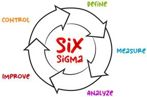
DISEÑO PARTICIPATIVO
El Diseño Participativo es una metodología que propone la inclusión de todas las personas involucradas en un proyecto para que puedan expresar su punto de vista o enfoque, con el objetivo fundamental de que todos los actores tengan voz en el proceso de toma de decisiones.
Esta aproximación democrática al diseño se sustenta en diversas estrategias para su aplicación efectiva:
El Brainstorming colaborativo, que busca reunir ideas de todos los miembros del equipo.
El mapeo de actores, que identifica a todas las personas afectadas por una decisión para considerar sus opiniones.
los talleres de co-creación, que generan espacios donde los participantes trabajan juntos en la búsqueda de soluciones; las encuestas y focus groups, que permiten recopilar sistemáticamente opiniones antes de tomar decisiones importantes.
Las características distintivas del Diseño Participativo incluyen la colaboración como elemento central, el espíritu de emprendimiento que impulsa la innovación colectiva, la iteración constante que permite refinar las ideas a través de ciclos sucesivos, y un enfoque firmemente centrado en el usuario que garantiza soluciones relevantes y funcionales.
Entre sus principales beneficios se encuentra la mejora significativa en la usabilidad y aceptación de los productos o servicios desarrollados, el fomento de la innovación mediante la incorporación de perspectivas diversas, la promoción de la inclusión y la equidad al considerar a grupos tradicionalmente marginados o menos representados, la reducción del riesgo de desarrollar soluciones que no satisfagan las necesidades reales, y un mayor compromiso por parte de todos los involucrados, quienes se implican más profundamente cuando sus ideas son tomadas en cuenta.
Sin embargo, también presenta desafíos importantes como la mayor inversión de tiempo y recursos necesarios, las posibles dificultades en la toma de decisiones consensuadas, la resistencia al cambio especialmente en estructuras jerárquicas tradicionales, y el potencial dominio de ciertas voces que pueden desequilibrar la participación equitativa.
El Diseño Participativo encuentra aplicación en múltiples ámbitos:
ü Diseño de productos tecnológicos como software, aplicaciones e interfaces; en la planificación urbana y arquitectura para crear espacios más acordes a las necesidades comunitarias
ü Diseño de servicios públicos o privados que buscan mayor aceptación y usabilidad
ü Desarrollo de políticas o programas sociales que requieren amplio respaldo ciudadano.
Para implementar eficazmente esta metodología, se sigue un proceso estructurado que comienza por definir claramente el propósito y alcance de la iniciativa, continúa con la identificación y convocatoria de los participantes relevantes, prosigue con la creación de un espacio de diálogo abierto y constructivo, avanza hacia la generación colectiva de ideas y soluciones, y culmina con la evaluación participativa y toma de decisiones consensuadas.
Esta metodología guarda una estrecha relación con el concepto de liderazgo inclusivo, caracterizado por la escucha activa que valora genuinamente todas las opiniones, un estilo facilitador en lugar de impositivo donde el líder actúa como guía y no como autoridad absoluta, el fomento deliberado de la creatividad y la innovación mediante la diversidad de pensamiento, y la construcción sólida de confianza a través de la transparencia y la inclusión que fortalecen la cohesión del equipo.
DEVOPS (Development & Operations)
DevOps representa la fusión estratégica de dos áreas tradicionalmente separadas:
El Desarrollo de Software (Dev) y Las Operaciones de TI (Ops).
Esta metodología revolucionaria se enfoca en automatizar procesos y mejorar significativamente la entrega de software, eliminando los silos organizacionales que históricamente han obstaculizado la comunicación y eficiencia en el desarrollo de productos tecnológicos.
DevOps se sustenta en principios clave que transforman la cultura organizacional y los procesos técnicos: la colaboración y comunicación constantes entre equipos que anteriormente operaban de manera aislada, la automatización exhaustiva de procesos que reduce errores humanos y acelera los ciclos de desarrollo, y la implementación de prácticas de integración y entrega continua que permiten actualizaciones más frecuentes y confiables.
El ciclo de vida de DevOps se estructura en siete fases interdependientes que forman un flujo continuo:
· Comienza con la planificación detallada que establece objetivos claros y define los requisitos del proyecto.
· Continúa con la fase de desarrollo donde los programadores escriben y revisan el código.
· Avanza hacia la integración continua donde se combinan y verifican automáticamente los cambios de código.
· Prosigue con la entrega continua que prepara las actualizaciones para su implementación.
· Sigue con pruebas exhaustivas para garantizar la calidad; culmina con la implementación del software en entornos de producción.
· Finalmente establece un monitoreo constante que proporciona retroalimentación para mejoras futuras.
Para implementar efectivamente estas fases, DevOps utiliza un ecosistema completo de herramientas especializadas:
o Sistemas de control de versiones como Git y Subversion para gestionar cambios de código
o Plataformas de integración continua como Jenkins y Travis CI para automatizar pruebas
o Herramientas de entrega continua como Spinnaker y Argo CD para gestionar despliegues
o Tecnologías de contenedorización como Docker y Kubernetes para estandarizar entornos
o Sistemas de monitoreo como Prometheus y Grafana para supervisar el rendimiento en tiempo real.
SELECCIÓN DE UNA METODOLOGÍA DE DISEÑO.
La metodología propuesta para el diseño mecatrónico toma como base las teorías del diseño mecánico, integrando las teorías de las otras áreas (electrónica, software, control) en el momento pertinente para asegurar una guía y sustento teórico sólido.
Se requiere el apoyo de metodologías de diseño probadas y adaptarlas para que incorporen en el momento preciso las actividades multidisciplinarias que componen al producto mecatrónico.
Los puntos de vista a relacionar son:
o Diseño Mecánico
o Diseño Electrónico
o Diseño de Software y Control
4. Aplicación del método.
4.1 Identificación de las necesidades y requerimientos.
METODOLOGÍA PARA DISEÑO MECATRÓNICO PROPUESTA
La metodología se estructura en bloques de actividades no estrictamente consecutivas, permitiendo iteraciones y redefiniciones de conceptos.
Necesidades y Requerimientos.
Esta fase inicial se basa en la comprensión y planeación de la tarea, transformando las necesidades en especificaciones.
1. Localización de las Necesidades: Se identifican las necesidades del cliente o usuario (que puede ser otro artefacto, como una computadora).
2. Traducción a Requerimientos: Los requerimientos deben reflejar no solo propiedades mecánicas, sino también electrónicas, informáticas y de control. Ejemplos: que el dispositivo pueda decidir entre varias opciones, que alcance una posición con velocidad definida, o que maneje un protocolo de comunicación específico.
3. Análisis de Interacción: Las transformaciones de energía y la comunicación de información entre subsistemas deben ser consideradas, generando especificaciones de diseño para cada subsistema.
4.2 Diseño conceptual.
DISEÑO CONCEPTUAL
En esta fase se determinan los principios de solución y se establecen las estructuras funcionales.
1. Abstracción y Estructura Funcional: Se plantea la función principal del sistema (el producto) y se divide en subfunciones y subsistemas básicos. Un sistema mecatrónico típico se modela funcionalmente con entradas, salidas, subfunciones interconectadas, lidiando con perturbaciones y generando desperdicios.
2. Generación de Conceptos: Se buscan diversas alternativas combinando principios tecnológicos. Técnicas como TRIZ, lluvia de ideas (Brainstorming), el método de la galería, el uso de analogías o estímulos relacionados y la formulación de objetivos cuantitativos son sugeridas.
3. Estructura del Concepto: La solución conceptual principal está caracterizada por:
o La estructura de módulos y partes que realizan las funciones.
o La estructura de la interfaz (fronteras entre sistemas mecánicos, electrónicos y de software).
o La actividad estructural que describe la conducta esperada por el operador y el software.
4. Selección y Ponderación de Conceptos (Configuración): Se utiliza el método de matrices de decisión para evaluar y seleccionar los mejores conceptos de diseño. Esto implica:
o Preparar la matriz de selección.
o Calificar los conceptos (usando puntuaciones relativas como +, 0, - o valores numéricos 0-5).
o Ordenar por rango los conceptos.
o Combinar y mejorar los conceptos.
o Seleccionar el concepto integral que mejor cumpla con los multicriterios ponderados (control, flexibilidad, estabilidad, precisión, etc.).
Fórmula conceptual para la evaluación de conceptos ponderados:
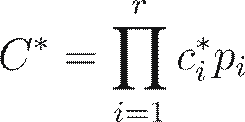
Donde es el valor del concepto total, son las calificaciones de concepto en cada subsistema/criterio, y son los valores de ponderación asignados a los criterios.
4.3 Diseño de detalle.
Diseño de detalle
Una vez seleccionado el concepto, se procede a la definición detallada de cada parte, componente, subsistema, interfaz, programa y control, ubicándolo espacialmente.
• Modelado y Simulación: En esta etapa se modelan y simulan idealmente los subsistemas. Los sistemas mecánicos solo pueden modelarse dinámicamente con suficiente detalle. La electrónica y el software evolucionan con el diseño total.
• Diseño Mecánico de Detalle: Definición de los arreglos, formas, dimensiones y propiedades superficiales de todos los elementos, especificación de materiales y posibilidades de producción.
• Diseño de Software de Detalle: Implica elaborar el algoritmo (incluyendo ecuaciones de funcionamiento y control), realizar un diagrama de flujo con geometría normalizada, y codificar el programa en el lenguaje requerido (basado en el dispositivo de procesamiento, factores económicos y lenguaje del equipo). El software debe estar coordinado con el hardware electrónico.
• Diseño de Circuitos de Detalle: Si no se usan dispositivos programables, se diseñan circuitos electrónicos funcionalmente (diagrama de circuito) y físicamente (hardware electrónico). Se especifican componentes estandarizados y medios de interconexión (PCB, película delgada).
4.4 Implementación y pruebas.
IMPLEMENTACIÓN
La implementación ocurre después de la fase de diseño de detalle, traduciendo las especificaciones en un producto físico y funcional, seguido por la validación.
Prototipado y Desarrollo de Hardware: Uso de tarjetas de pruebas o prototipos rápidos (p. ej., proboards) para validar los circuitos electrónicos antes de la fabricación final. Se recomienda el diseño modular de tarjetas para facilitar la sustitución o el escalamiento.
Desarrollo de Software: Se utilizan ambientes de desarrollo integrados (IDEs) que permiten el desarrollo del diseño esquemático, análisis (instrumentación virtual), y generación de planos de circuito impreso.
Herramientas como el VSM (Módulo de Visualización Virtual) permiten simular el funcionamiento del programa y las relaciones electrónicas de manera virtual.
Control y Modelado Matemático: La implementación de control requiere el modelo matemático del sistema para determinar velocidades, orientaciones y posicionamiento.
Los esquemas de control se basan en: Encendido/Apagado (On/Off), Proporcional (P), Integral (I) y Derivativo (D), o sus combinaciones (PI, PD, PID).
Ecuación diferencial de un sistema de segundo orden (masa-resorte-amortiguador):
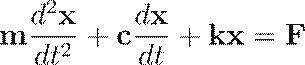
Donde es la masa, la constante de amortiguamiento, la rigidez del resorte, y la fuerza de entrada.
Fórmula para la función de control PID (forma continua):
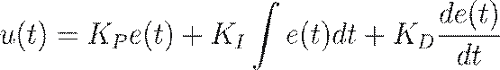
Donde es la señal de salida del controlador, es la señal de error, es la ganancia proporcional, la constante integral, y la constante derivativa.
PRUEBAS
Pruebas y Optimización: Las pruebas se realizan para validar el diseño y asegurarse de que el producto cumple con los objetivos establecidos.
Esto incluye comparar el comportamiento predicho por el modelo teórico con el comportamiento real. Si coinciden, el modelo es suficientemente robusto para ser utilizado para el juego virtual.
La metodología DMAIC de Six Sigma incluye la fase de Implementación y Control, donde se desarrollan y prueban soluciones en condiciones controladas, y se establecen sistemas de control continuo con alertas automáticas (Seguimiento Real-Time).
|
Fase de Prueba |
Descripción |
|
Prueba de pre-instalación |
Prueba de calibración y operación de cada instrumento antes de la instalación. |
|
Prueba de tuberías y cableado |
Verificar la continuidad eléctrica y la ausencia de fugas. |
|
Prueba pre-funcional |
Verificar que la instalación esté completa y que los componentes funcionen de manera interconectada. |
|
Pruebas Unitarias |
Garantizar que cada componente de software funciona individualmente. |
|
Pruebas de Integración |
Verificar el funcionamiento del software cuando se conecta con otros componentes. |
|
Pruebas de Sistema |
Validar el diseño con pruebas exhaustivas, incluyendo simulaciones computacionales y pruebas de campo. |
5. Bibliografía
Bolton, W. (2013). Mecatrónica: Sistemas de control electrónico en la ingeniería mecánica y eléctrica (5ta ed.). Alfaomega Grupo Editor.
Pressman, R. S. (2013). Ingeniería del software: Un enfoque práctico (7ma ed.). McGraw-Hill.